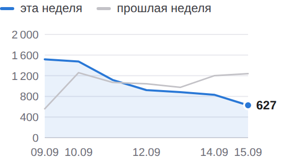
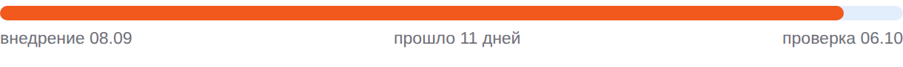

BIZSoft Growth Intelligence Daily Search, Demand & Experiment Control · 19.09.2026
Яндекс по 15.09 · Google по 16.09 · Метрика по 18.09 · спрос 15.09 | | × | ПОИСК — снижение | | | ✓ | ДАННЫЕ — сверено | | | ! | ТЕХНИКА — YELLOW · 96 | | | · | ОТ ВАС — 2 предложения | |
| От вас: срочного нет, на вашем столе 2 предложения • эксперименты: ближайшее предложение решения — 09.10 (MONEY-A2); варианты и вероятный исход — в «Контроле эксперимента» • рост без бюджета: 3 кластера с показами без переходов (оплатить бокс, google, adobe) ждут переписанных сниппетов — «Где ближе всего рост» Развёрнутые постановки задач — в разделе «Управленческие воздействия» внизу письма; решения принимаете вы, система без команды ничего не меняет. |
| Показатели Видимость в Яндексе 7 375 показов за неделю ▲ +28 +0,4%  По дням: эта неделя 7 375, прошлая 7 347. На первой странице 1284 из 1650 запросов выборки. CTR 0,54% по всему сайту. 09.09–15.09 · Яндекс.Вебмастер, весь сайт, дневные ряды · достоверность: достаточная |
Видимость в Google 37 показов за неделю ▼ −74 −66,7% Переходы из Google за окно: 1. 10.09–16.09 · Google Search Console, весь сайт, дневные ряды · достоверность: низкая, малые числа |
Органический трафик 26 визитов за неделю ▼ −5 Визиты из поиска: весь сайт, все поисковые системы. 12.09–18.09 · Яндекс.Метрика, весь сайт, дневные ряды · достоверность: достаточная |
Обращения 1 заявка за сутки Заявки воронки сайта: компания, состав запроса и канал каждой — в блоке «Заявки за сутки». 18.09 · воронка сайта (Directus) · достоверность: полный подсчёт, малые числа |
| Сигналы дня Показы в Google за неделю 111 → 37 (−74)Страницы сайта стали показываться реже. достоверность: достаточная Целевые события органики 52 → 118 (+66)Целевых действий на сайте стало больше. достоверность: достаточная Запросы выборки на первой странице 1 309 → 1 284 (−25)Внутри выборки стало меньше запросов на первой странице. достоверность: достаточная | Заявки за сутки канал определяется по визитам Метрики (ym:s:clientID); при отсутствии визитов — по метке источника в браузере, и тогда выдача поисковика неотличима от его сервисов 1 заявка за сутки на 183 449 ₽; за 7 дней по каналам: прямой заход: 2, переход по ссылке — alice.yandex.ru: 1, переход по ссылке — dzen.ru: 1. 21:01 · ООО "КВИЛ ТЕХНОЛОДЖИС" Cursor Business и ещё 1 · 183 449 ₽ · КП № BZ-20260918-19697 · скачивание КП Канал: прямой заход Путь: первый визит 18.09 — прямой заход, вход /; 1 визит до заявки основание: Метрика · визит 18.09 | Реклама — Яндекс.Директ расход в деньгах кабинета (без НДС); заявки — цели Метрики (отправка заявки, скачивание КП), контакты — клики по телефону/почте и мессенджер; с CRM не сверяется Кампания Директа, данные за 18.09: за день 1333 ₽, за 7 дней 8643 из 4 098 ₽ недельного лимита, с запуска 18790 ₽ (22 дн.). Claude — 194 ₽, 10 кликов, CPC 19 ₽, заявок 0 · идёт набор статистики (2173 из 3000 ₽ до порога) Claude Code — 30 ₽, 2 клика, CPC 15 ₽, заявок 0 · идёт набор статистики (1335 из 3000 ₽ до порога) Midjourney — 41 ₽, 2 клика, CPC 20 ₽, заявок 0 · 960 ₽ без заявок и контактов — выше допустимой цены заявки 600 ₽, кандидат на паузу, решение за вами ChatGPT Business — 0 ₽, 0 кликов, заявок 0 · идёт набор статистики (1088 из 2500 ₽ до порога) Cursor — 105 ₽, 6 кликов, CPC 18 ₽, заявок 0 · идёт набор статистики (1035 из 3000 ₽ до порога) Adobe — 266 ₽, 14 кликов, CPC 19 ₽, заявок 0 · 3487 ₽ без заявок и контактов — выше допустимой цены заявки 1500 ₽, кандидат на паузу, решение за вами Зарубежное ПО (общая) — 14 ₽, 1 клик, CPC 14 ₽, заявок 0 · идёт набор статистики (522 из 2500 ₽ до порога) Atlassian — 57 ₽, 3 клика, CPC 19 ₽, заявок 0 · идёт набор статистики (302 из 3000 ₽ до порога) Box и Dropbox — 0 ₽, 0 кликов, заявок 0 · мало данных (3 кл.) Descript — 0 ₽, 0 кликов, заявок 0 · мало данных (3 кл.) Прочие группы (Apple Gift Card, Оплата подписок Apple из России, Подарочная карта Apple, Подарочные карты сотрудникам, Пополнить Apple ID и баланс App Store) — 626 ₽, 55 кликов, CPC 11 ₽ · группа вне списка направлений — добавить в контроль Требует решения: 398 ₽ ушло на нерелевантные запросы (54 шт.) — предлагаю добавить минусы, список в веб-отчёте | Аудитория: устройства и каналы Окна: показы 09.09–15.09 · визиты 12.09–18.09 · «Яндекс» и «Гугл» в таблице визитов — Метрика и GA4, два счётчика одного сайта: расхождение между ними — свойство измерения, а не разница трафика. Яндекс: с телефонов 77% показов; Google: с телефонов 30% показов; Яндекс.Метрика: больше всего визитов даёт прочее (прямые, внутренние, без канала) (744); GA4: больше всего визитов даёт реклама (393). Показы · Яндекс 7 375 показов за неделю ▲ +0,4% Десктоп 23% · Мобильные 77% · Планшеты 0% Яндекс.Вебмастер · к прошлой неделе +28 |
Показы · Google 37 показов за неделю ▼ −66,7% Десктоп 70% · Мобильные 30% · Планшеты 0% Search Console · к прошлой неделе −74 |
Визиты · Яндекс.Метрика 1 180 визитов за неделю ▲ +123,5% Десктоп 81% · Мобильные 19% · Планшеты 1% Яндекс.Метрика · к прошлой неделе +652 |
Визиты · GA4 513 сессий за неделю ▼ −18,6% Десктоп 60% · Мобильные 38% · Планшеты 2% GA4 · к прошлой неделе −117 |
Яндекс · Яндекс.Метрика | Канал | Всего | Деск. | Моб. | План. | Δ |
|---|
| Органика | 26 | 18 | 7 | 1 | −16% | | Реклама | 405 | 253 | 145 | 7 | +1% | | Внешние переходы | 5 | 5 | 0 | 0 | — | | Прочее | 744 | 677 | 67 | 0 | +675% | | Итого | 1 180 | 953 | 219 | 8 | +123,5% |
Гугл · GA4 | Канал | Всего | Деск. | Моб. | План. | Δ |
|---|
| Органика | 30 | 24 | 6 | 0 | −46% | | Реклама | 393 | 252 | 135 | 6 | −22% | | Внешние ссылки | 2 | 1 | 0 | 1 | — | | Внешние площадки | 28 | 4 | 24 | 0 | — | | Прочее | 60 | 27 | 29 | 4 | +13% | | Итого | 513 | 308 | 194 | 11 | −18,6% |
Внешние переходы привели: vc.ru — 24, dzen.ru — 4, chatgpt.com — 3 и ещё 2 домена. Класс каждого домена — каталог, площадка или форум — в подробном отчёте. | Что дало изменение Google. Причина изменения пока не определена: разложить его на имеющихся данных нельзя. накопленное окно 26 дней, сдвинуто на сутки Яндекс. Причина изменения пока не определена: разложить его на имеющихся данных нельзя. все 1639 запросов хоста, окно 2026-09-05–2026-09-15 | Контроль эксперимента MONEY-A2 · заголовки и блок вопросов на 1 карточках Проверяем: понятнее ли описание страницы в выдаче для того, кто покупает на компанию, и чаще ли по ней переходят Запуск 08.09 · день 11 · минимум для вывода 7 дн. и 500 показов Внедрение: 1 из 1 страниц отдают новый вариант (проверка сайта 19.09). Выдача Яндекса: новый сниппет виден в выдаче у 1 из 1 страниц (замер 19.09), позиция 2 — Яндекс уже показывает новый вариант. Экспозиция: 872 показа из 500 минимальных (порог пройден), вывод ждёт чистого окна с 09.10 · 3 клика · день 11 из 7 минимальных. Старый → новый: CTR 1,37% (окно 08.08–04.09, до внедрения) → 0,34% (окно 05.09–15.09, 7 из 11 дней после) — предварительно ×0,3; позиция 6,5 → 6,5. оговорки: базовое окно фиксированное (полная выгрузка 2026-08-08–2026-09-04); текущее — скользящее, окна разной длины сравниваются по CTR, не по показам; текущее окно пересекает период до внедрения: 7 из 11 дней — после Вывод: наблюдаем — экспозиция набрана, до контрольной даты. Следующая проверка 06.10. Что дальше: Предложение решения — 09.10 (первое чистое окно данных): варианты EXPAND — тираж формулы на следующие карточки по спросу; KEEP — оставить; REVERT — откат; EXTEND — продлить; по предварительным данным вероятен REVERT или KEEP; выбор за вами.  Прошло 11 дней, проверка 06.10. |
| Где ближе всего рост оплатить бокс 558 показов по запросу за период, средняя позиция 7.98 — в первой десятке, но без переходов Потенциал: переходы при том же объёме показов — платить за них не нужно Что делаем: переписать заголовок и описание страницы под запрос решение за вами, срок не назначен · достоверность: sufficient google «gemini купить» — 5300 запросов в месяц (рыночный спрос, замер 2026-09-15), наша страница по этим словам не видна Потенциал: запрос с подтверждённым спросом, по которому нас нет Что делаем: довести карточку до запроса: заголовок, описание, ответ в FAQ решение за вами, срок не назначен · достоверность: sufficient adobe «adobe купить» — 3887 запросов в месяц (рыночный спрос, замер 2026-09-15), наша страница по этим словам не видна Потенциал: запрос с подтверждённым спросом, по которому нас нет Что делаем: довести карточку до запроса: заголовок, описание, ответ в FAQ решение за вами, срок не назначен · достоверность: sufficient | Интерес к вендорам в поиске Интерес в нашей выдаче, не рыночный спрос (его измеряет Вордстат). Recraft — 1 169 показов в Яндексе (лучшая позиция 2.8) GitLab — 1 015 показов в Яндексе (лучшая позиция 2.0) Framer — 938 показов в Яндексе (лучшая позиция 3.0) Проверить платным трафиком: «оплатить бокс» (558 показов, позиция 8.0) — конверсионность запросов не измерена. | Спрос и направления развития Замер спроса от 15.09, обновляется по расписанию исследования Мы видим 971 574 покупательских запросов в месяц по 178 направлениям каталога. Своя страница есть под 96% этого спроса, в поиске находится 87%, на первой странице — 75%. Без страницы остаётся 16 205 запросов в месяц — это направления, где спрос есть, а своей страницы нет. Ещё 52 137 запросов в месяц не отнесены ни к нам, ни к чужому товару: это голые фразы омонимичных брендов (box — 30 187, zoom — 10 813, bubble купить — 5 732). В спрос и в решения об ассортименте они не входят. 96% есть своя страница | 87% страница в поиске | 75% на первой странице |
Ближайшее направление: apple. Позиция хорошая, показы есть, переходов мало — 677 441 запрос в месяц. Что делаем: эксперимент со сниппетом. | Управленческие воздействия постановки задач по предложениям из шапки; система без вашей команды ничего не меняет 1. Принять решение по эксперименту MONEY-A2 Зачем: контрольная точка 09.10; предварительно ×0,3 по CTR кластера (872 показов). Что делаем: прочитать панель вердикта в письме контрольной даты (вердикт, уверенность, p-value, рекомендация с целевыми страницами) и ответить в чате командой. Приёмка: решение зафиксировано в журнале решений экспериментов. От вас: одна команда 09.10: EXPAND / KEEP / REVERT / EXTEND MONEY-A2. 2. Переписать сниппеты под 3 запроса с показами без переходов Зачем: «оплатить бокс» — 558 показов по запросу за период, средняя позиция 7.98 — в первой десятке, но без переходов; «google» — «gemini купить» — 5300 запросов в месяц (рыночный спрос, замер 2026-09-15), наша страница по этим словам не видна; «adobe» — «adobe купить» — 3887 запросов в месяц (рыночный спрос, замер 2026-09-15), наша страница по этим словам не видна. Что делаем: для каждого запроса: переписать title целевой страницы под запросную формулу (≤65 символов, штатный слой src/lib/seo.ts), description ≤160 с оффером «счёт, договор, ЭДО», добавить вопрос в FAQ-блок; изменения — отдельным PR с частотностью по каждой правке, мерж ваш. Приёмка: по каждому запросу появились переходы (CTR > 0) в течение 14 дней при позиции не хуже исходной ±1. От вас: команда «делай сниппеты» — правки уходят в PR. | Техническое состояние YELLOW · мобильная скорость 96 Проверено страниц: 12 — главная 96, каталог 97, категория 96, вендорская страница 98, вендорская страница 98, вендорская страница 96, карточка товара 95, карточка товара 96, карточка товара 96, статья 97, статья 97, сравнение 97. LCP: в норме · CLS: выше нормы Главная (/): CLS 0,01 → 0,12. Вероятная причина: смещения вёрстки: изображение или блок без заданных размеров. P2 — разобрать на неделе. Карточка товара (/product/chatgpt-business): CLS 0,00 → 0,12. Вероятная причина: смещения вёрстки: изображение или блок без заданных размеров. P2 — разобрать на неделе. Статья (/blog/kak-kupit-recraft-dlya-yurlica): CLS 0,00 → 0,11. Вероятная причина: смещения вёрстки: изображение или блок без заданных размеров. P2 — разобрать на неделе. Последняя расширенная проверка 19.09: 12 адресов, зелёных 12, жёлтых 0, красных 0. | Здоровье данных Сверено: охваты сопоставлены: KPI считаются по всему сайту Показы и клики Яндекса, показы Google, визиты Метрики и сессии GA4 считаются по всему сайту за окна равной длины. Выборка запросов используется только в разделе возможностей и на KPI не влияет. Показы и переходы Яндекса относятся к весь сайт, визиты Метрики — к весь сайт и ко всем поисковым системам сразу. Сопоставлять корректно показы с переходами одной выборки, а визиты Метрики — с сессиями GA4. Конвейер: 11 из 11 контуров отработали в срок. |
| Следующие проверки 06.10 — MONEY-A2: замер кликабельности изменённых страниц До перечисленных дат выводы не делаются: данных выдачи за более короткий срок недостаточно, чтобы отличить эффект от обычных колебаний. | | Полный отчётЖурнал работ |
|